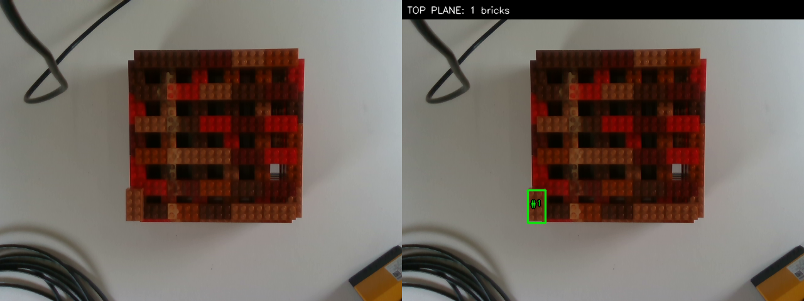
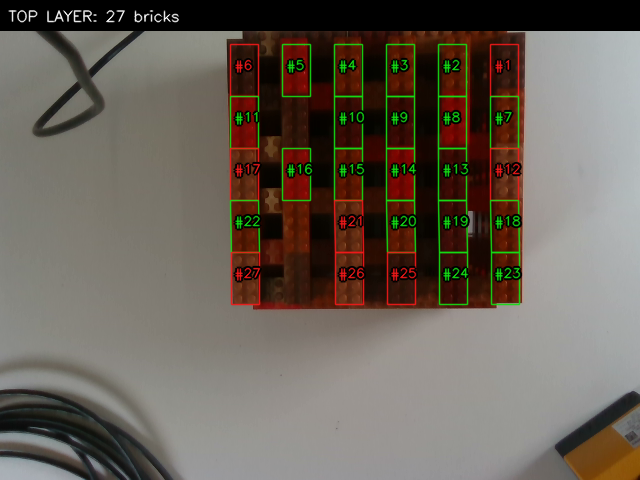

RGB-D capture
Aligned color and depth images, plus camera intrinsics.
MARMON × FRANKA ROBOTICS HACKATHON
An RGB-D perception system for finding accessible LEGO bricks, identifying their quality, and providing camera-frame geometry for robotic pick-and-sort.
01 / THE CHALLENGE
A stack reveals only part of its structure. The system needs to distinguish the exposed top layer from lower bricks, identify each accessible brick, and communicate its quality and geometry to a robotics team.
The project also explores a separate physical-brick inspection task, using a small set of photographed real bricks to classify good and bad samples.
02 / THE PERCEPTION PIPELINE
The perception system combines learned segmentation with depth and geometric priors. Color classification and camera-frame pose estimation are separate downstream stages.
Aligned color and depth images, plus camera intrinsics.
SAM 3 seeds, support-plane depth and a brick lattice recover oriented boxes.
Robust Lab measurements distinguish designated good and bad colors.
3D center, orientation and cuboid geometry for the robotics team.
Robot execution requires a camera-to-robot transform and the robotics team’s motion planning and grasping system.
Temporal depth filtering and a fitted support plane estimate physical height. A supported height peak overlapping a LEGO-shaped seed selects the top surface.
Oriented seeds and a regular lattice propose cells over the top plane, helping recover missed or merged instances. Candidate boxes are checked against depth support.
Each oriented crop is checked against color prototypes. The pixel center is projected to the top plane to estimate camera-frame geometry.
03 / QUALITATIVE RESULTS
Representative saved outputs show top-layer detection, color classification and estimated camera-frame geometry. These are qualitative examples, not measured detection accuracy.




04 / PHYSICAL BRICKS
A separate classifier combines hand-designed color and texture statistics with learned DINOv2 representations for photographs of real bricks.
The first two figures use the original masks and zero threshold. The last uses photos of bricks included in training. Neither measures performance on new live-camera bricks.
05 / WORKING WITH ROBOTICS
For each detected LEGO brick, the exporter records its quality and fitted camera-frame center, orientation, and 3D corners. The robotics team can transform that geometry into the robot base frame for planning.
Camera-frame coordinates are in metres: +x right, +y down, +z forward. Hand–eye calibration is required to express a target in the robot base frame.
06 / REFLECTIONS
Physical height helps distinguish the top layer from visible lower bricks.
A lattice can propose instances where segmentation misses or merges neighboring bricks.
Ten physical bricks provide a useful prototype, but broader unseen-brick and live-camera testing remains necessary.